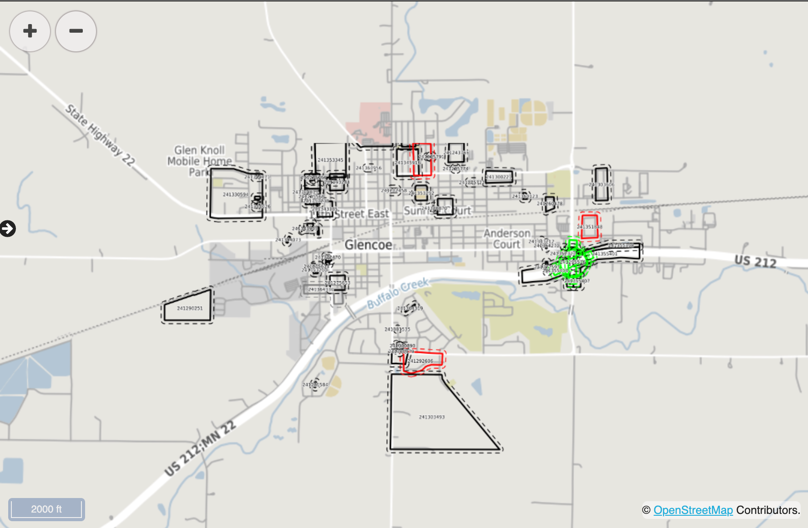

Data Provider Dashboard
Note
This document will be updated with content from the System Operator Admin Guide once the project is completed. The current content is just a placeholder.
The Data Provider Dashboard is the Operational Interface for all Data Providers. From the Dashboard, you will be able to see a list or a map of all your tickets.
Ticket List
Displays a list of all the tickets managed by the Data Provider.

FuzionView Data Provider Dashboard PLACEHOLDER
Ticket Map
Displays a map of all the tickets managed by the Data Provider.

FuzionView Data Provider Dashboard PLACEHOLDER